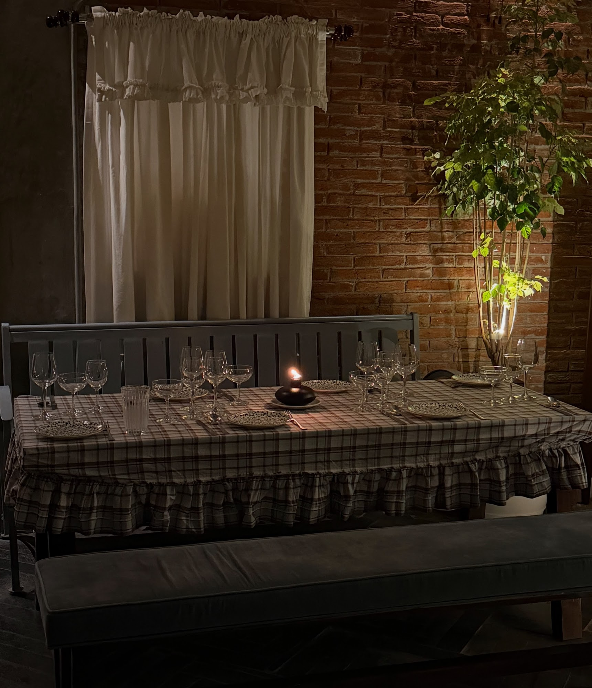
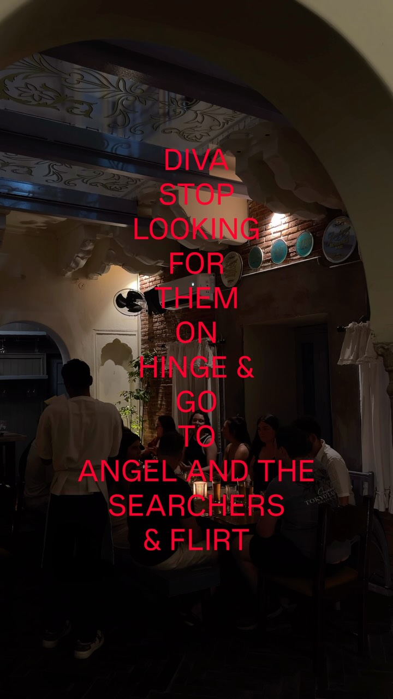
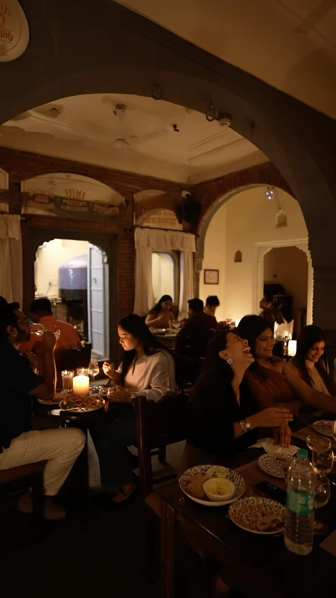
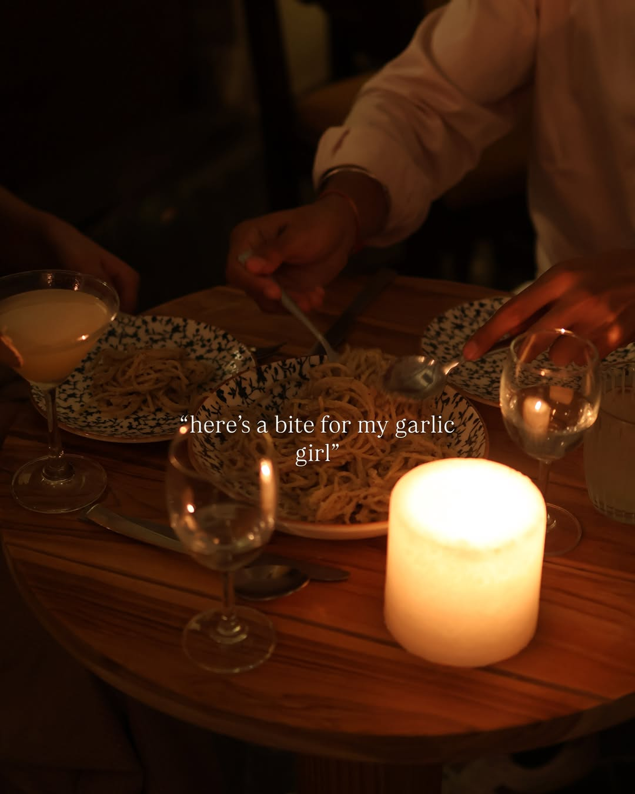
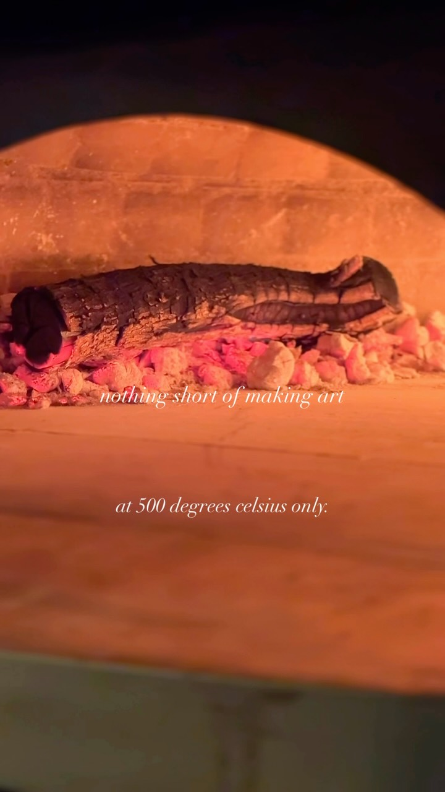
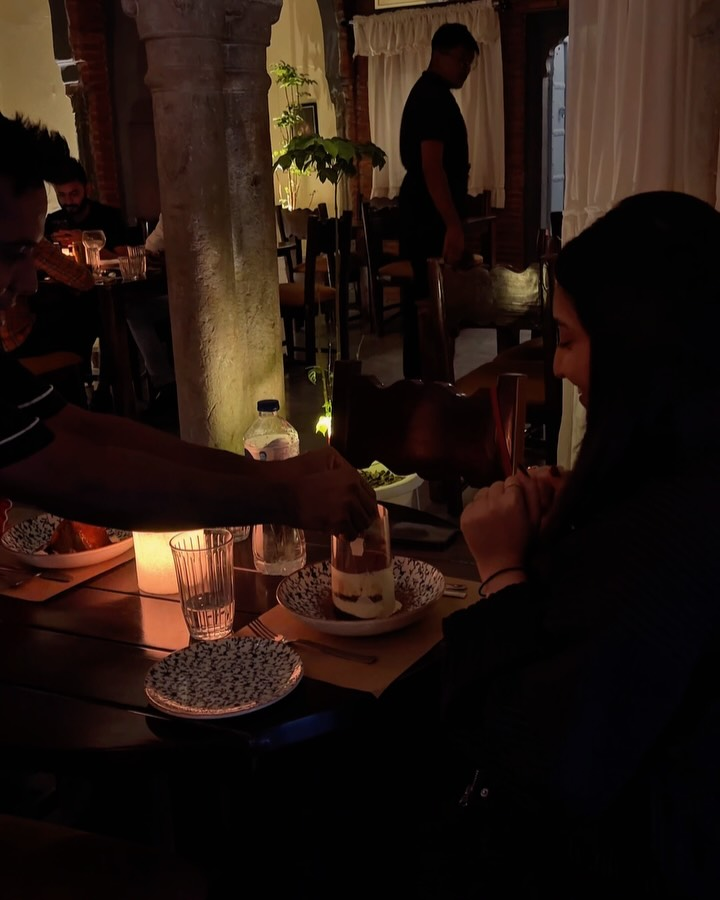
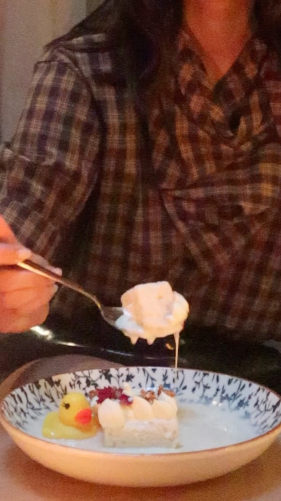

Old Italian romance, in a 300-year-old haveli.




Two forks, one bowl.
Hand-rolled pasta shared across a candlelit table. Lady and the Tramp, but in a haveli.
See the menu →The menu reads like a love story, from first date to forever.
See the menu →
Stay for the fire.
The wood-fired oven burns till midnight. Tiramisu, a last glass, one more story.
Book a table →Late tables most nights.
Book a table →This week at Angel’s

